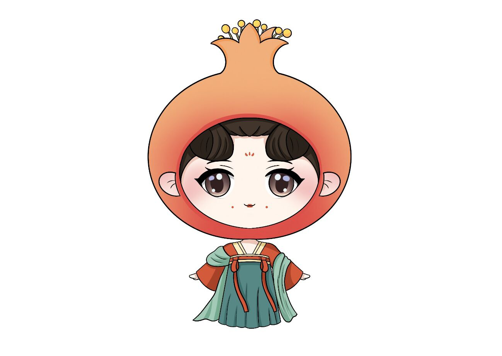

平台概况
HCIP平台（Huaiyuan Pomegranate Brand Image Cultivation and Industrial Upgrade Platform）旨在通过建立一个集石榴种植、加工、销售、文化传承、旅游观光、品牌保护与售后权益维护等多种业务为一体的全产业链平台，推动怀远石榴的品牌形象培育和产业升级，提高怀远石榴的品质和质量，促进怀远农民与企业增收致富。同时，平台也将推出石榴文化衍生产品，如IP人物玩偶、抱枕、亚克力立牌等，以满足新生消费群体对于石榴文化产品的需求。